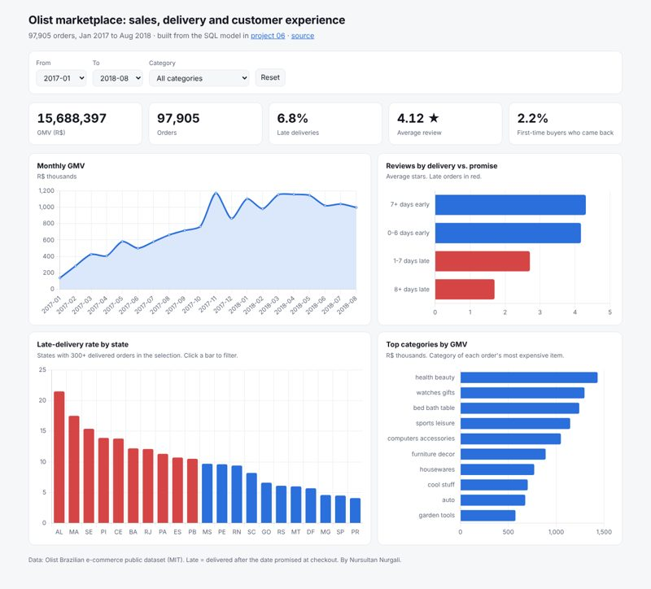
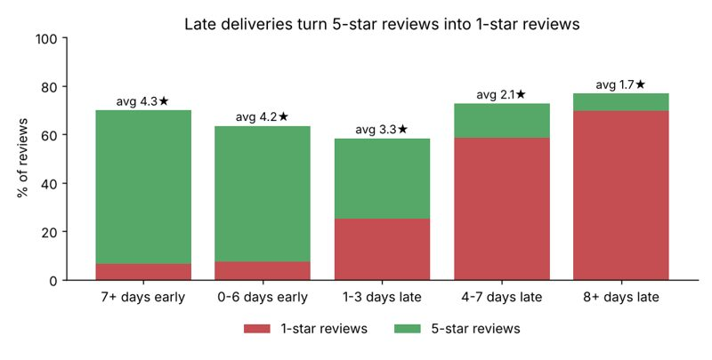
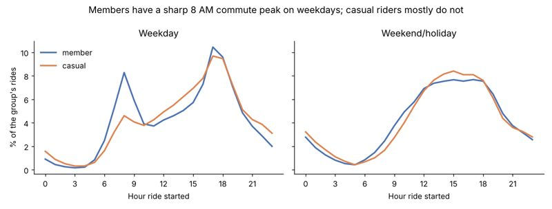
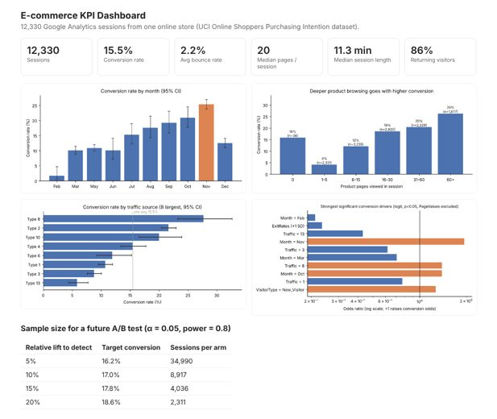
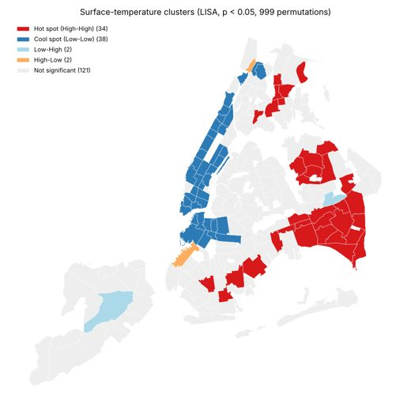
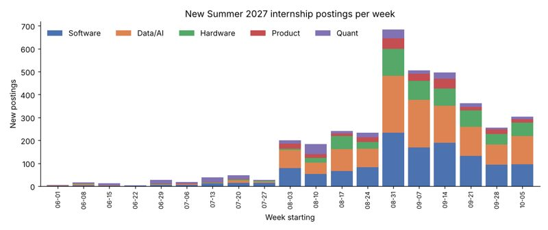

I turn messy public data into clear answers for the people who make decisions. SQL first, Python for statistics and maps, dbt for pipelines, and a chart for every claim. Looking for Summer 2027 data analyst internships in New York.

Filter 97,905 orders by month, category and state. Orders 8+ days late average 1.7 stars, against 4.3 for orders that arrive early.
Interactive web dashboard · SQL extractsProject 06 rebuilt as a production-style pipeline: 12 models and 46 automated data tests, run in CI on every push.
dbt · DuckDB · BigQuery-ready · GitHub Actions
Only 2.2% of 94,703 customers ever came back. Late delivery is the main driver of 1-star reviews.
SQL · cohort retention · RFM · Pareto
5 million rides joined to weather data. A storm weekend cut member rides by 62 to 72%, and office stations gain up to 135 bikes every morning.
SQL · star schema · LAG / RANK
November converts at 25.4%. A 10% lift test needs 8,917 sessions per arm. Caught a leaking feature that inflated AUC from 0.75 to 0.91.
Hypothesis tests · logistic regression · power analysis
Greenspace cools neighborhoods by 0.92°F per 10 points once spatial effects are modeled. Found 34 significant hot spots.
GeoPandas · Moran's I · spatial regression
1 in 4 postings closed within two weeks, and 46% of the season's postings landed in three September weeks.
SQL · window functions · git-history miningScraped and ranked 1,560 live postings. The ranking held up under ±30% weight changes (Kendall's τ = 0.95).
requests · BeautifulSoup · pytest